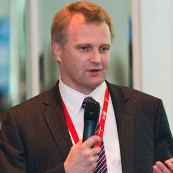
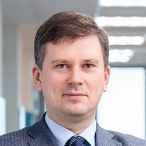
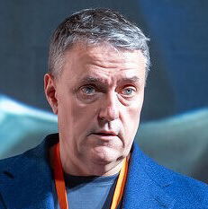
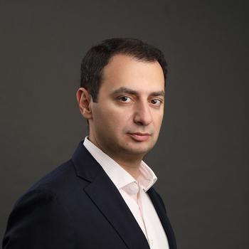
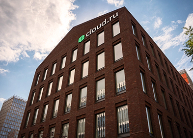
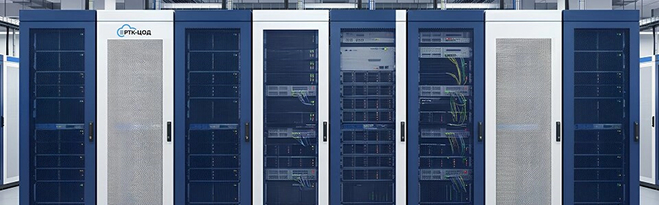
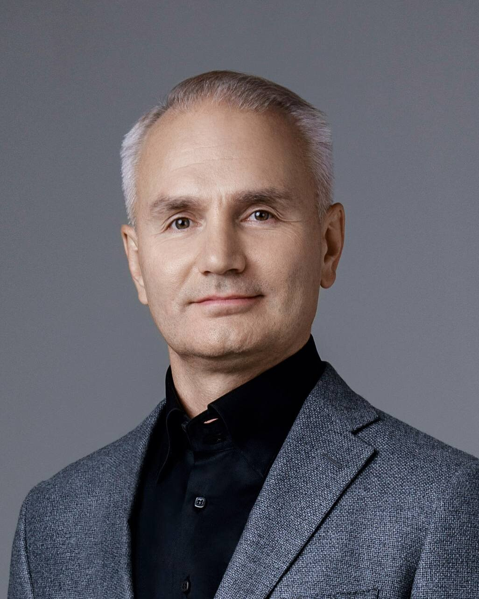
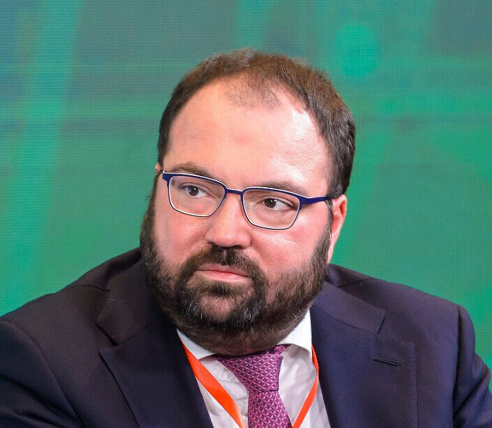
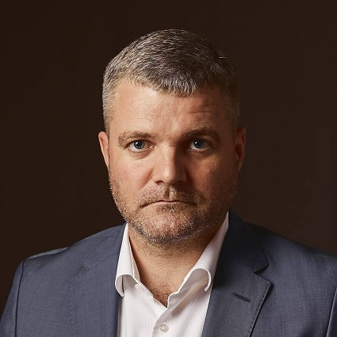

Второй сценарий — создание собственных облачных платформ на базе коммерческих центров обработки данных. Первыми этот сегмент освоили бывшие хостинг-провайдеры и системные интеграторы. Со временем к ним присоединились операторы связи, банки и сами владельцы дата-центров, начавшие предлагать собственные IaaS-решения.
Уход западных облачных провайдеров и невозможность быстро закупить «железо» для собственной инфраструктуры заставили бизнес массово мигрировать в российские облака. Весной 2022 г. был зафиксирован десятикратный рост запросов на миграцию, а общий спрос на услуги отечественных провайдеров вырос на 35%. Дополнительным драйвером стала локализация данных и ужесточение требований к информационной безопасности. В результате лидеры рынка показали взрывной рост: «Ростелеком» увеличил выручку на 111%, Cloud.ru — на 92%, Selectel — на 71%, а «Яндекс.Облако» — на 173%.
Ситуация с оборудованием стала критической: после ухода Dell, HP, Cisco и других западных брендов поставки серверов и СХД были практически парализованы. Компании были вынуждены завозить технику по параллельному импорту, что привело к росту цен в 3–4 раза и удлинению сроков поставок. В этих условиях IaaS стал не просто альтернативой, а зачастую единственным способом быстро получить вычислительные мощности без капитальных затрат и рисков, связанных с покупкой дефицитного оборудования.
импортозамещенный стек и бум ИИ

Российский рынок PaaS-решений находился на самой ранней, экспериментальной стадии развития. В отличие от более понятной бизнесу аренды инфраструктуры, PaaS-сервисы на раннем этапе требовали от разработчиков специальных навыков и ограничивали их свободу, привязывая к конкретным инструментам, что тормозило массовое внедрение технологии.
Ключевым игроком в 2010 г. стала компания Softline, предложившая первый в России коммерческий PaaS-хостинг на базе Windows Azure. Также предпринимались попытки создать независимую от международных решений платформу: российско-украинский стартап Hivext получил инвестиции и в партнерстве с «АктивХост.ру» запустился в России.
Российские ИТ-гиганты и провайдеры начинают активно изучать и внедрять OpenStack — открытую платформу для создания облачных инфраструктур. Это становится первым серьезным шагом к созданию собственных, независимых от зарубежных вендоров, платформенных решений. К слову, мировые крупные компании (Samsung, PayPal, Visa) также начинают уходить от VMware из-за экономических сложностей и переходят на OpenStack.
В то же время использование OpenStack сопряжено с рядом вызовов: сложность и отсутствие четкой инструкции, тяжелая документация, дефицит кадров, умеющих работать с платформой. Однако OpenStack остается зрелым стандартом с открытым исходным кодом для построения приватных облаков. Забегая вперед: именно OpenStack сыграет ключевую роль в импортозамещении 2022 г.
Бизнес осознает, что скорость вывода продукта на рынок — ключевой фактор успеха. PaaS перестает быть нишевой технологией для стартапов и становится массовым инструментом.
Крупные российские провайдеры (Yandex.Cloud, VK Tech, Cloud.ru) начинают активно дорабатывать платформенные сервисы. Важно предоставить не просто «голые» виртуальные машины, а управляемые базы данных, инструменты аналитики больших данных и сервисы машинного обучения. Разработчики получают доступ к экосистеме продуктов, сокращающей время выхода на рынок новых цифровых решений. Компании из финтеха, ритейла и других секторов массово переходят на платформенные сервисы, чтобы ускорить разработку и сократить издержки.

Спрос на платформенные и инфраструктурные облачные сервисы на российском рынке растет взрывными темпами. Главные драйверы — это увеличение объемов данных, развитие ИИ и повышение требований к информационной безопасности.
Отвечая на этот запрос, РТК-ЦОД предлагает заказчикам готовую ИТ-инфраструктуру «под ключ» — от PaaS и SaaS до корпоративного облака. Компания на протяжении 6 лет занимает первое место в рейтингах «Рынок коммерческих ЦОД в России» CNews Analytics 2020-2025 гг. В геораспределенной сети РТК-ЦОД 26 дата-центров, 27,8 тыс. стоек общей мощностью 235 МВт – это инфраструктура, которая позволяет бизнесу и госструктурам сразу получать отказоустойчивый облачный фундамент для работы и дальнейшего масштабирования.
Уход с российского рынка Atlassian, GitLab и другого популярного программного обеспечения для разработки стимулирует спрос на отечественные аналоги в составе PaaS. Рынок приходит к пониманию, что PaaS — это не просто базы данных, а полноценная среда для разработки «под ключ».
Одновременно с этим взрывной рост популярности искусственного интеллекта создает спрос на специализированные платформы (ML PaaS). Российские провайдеры фокусируются на создании комплексных решений, включающих инструменты для работы с данными, машинного обучения и обеспечения безопасности, что делает их ключевыми игроками в новой цифровой реальности.
В этот период основными препятствиями для внедрения облачных технологий были недоверие бизнеса к размещению данных на сторонних серверах, отсутствие развитой инфраструктуры электронного документооборота и слабое понимание преимуществ аренды софта. На всю страну приходилось всего порядка 2 тыс. организаций, использующих деловые приложения по модели SaaS, что крайне мало даже для сферы малого и среднего предпринимательства. В итоге о новой технологии активно рассказывают западные вендоры.
первых российских SaaS-решений
По модели SaaS пошло развитие приложений, связанных с поддержкой коммуникации, совместной работы и контента. С помощью SaaS-решений пробуют автоматизировать управление персоналом, кадровую, складскую работу и отслеживание проектной деятельности.
Из отечественных решений «СКБ Контур» развивает электронную отчетность, также на рынок выходит независимый проект «МойСклад» (складской учет) и набор «Мегаплан» (списки дел, планирование задач и CRM-система).
Несмотря на то, что рынок уже несколько лет делал шаги к освоению новой технологии, российский бизнес не спешит в облака: пользователи с недоверием относятся к хранению корпоративных данных на внешних серверах.
В 2011 г. в Россию приходит SaaS-гигант Microsoft со своим продуктом Microsoft Office 365, распространением которого занимались поначалу, например, компании «Крок», Softline, «Вымпелком» и «СКБ Контур». Ситуация начинает меняться: силами партнеров западные вендоры проводят масштабную маркетинговую и просветительскую кампанию, рассказывая о преимуществах и безопасности SaaS-продуктов. Реакцией на это стало законодательное закрепление требования к зарубежным компаниям хранить персональные данные в России и экстенсивный рост SaaS-решений в России. В 2014 г. прибыль от поставки облачных решений выросла на 20–35% в рублевом исчислении. Согласно рейтингу CNews, совокупные доходы 25 крупнейших поставщиков облаков увеличились на 29%.
С ростом перехода корпоративной инфраструктуры в SaaS-контур у бизнеса формируется запрос на интеграцию таких приложений между собой для более эффективной совместной работы. «Яндекс» развивает платформу для единой аутентификации во все свои сервисы, а Softline пытается создать каталог приложений. Интеграторы формируют пакетные предложения, когда за определенную сумму предоставляет сразу несколько приложений под запрос заказчика.
рабочие места
Уход западных SaaS-лидеров, таких как Microsoft, Oracle, SAP, Atlassian, Zoom, привел к образованию свободных ниш на рынке. До этого на фоне взлета популярности SaaS-решений в пандемию многие компании внедрили иностранные продукты в свою инфраструктуру — это, например, облачная ERP SAP Hana, которую активно продвигали в 2021-2022 годах — и от которой потом резко отключили всех, кто успел перейти.
Однако уже к 2023 г. российские разработчики начали догонять запросы рынка. Начался «ренессанс» отечественного ПО: компании активизировали развитие своих продуктов, рост спроса на аналитику для маркетплейсов.
Выделение ресурсов по традиционной модели, особенно через тендерные процедуры, может занять "почти вечность". Облачные технологии позволяют не только ускорить этот процесс, но и добиться большей прозрачности использовании выделенных ресурсов. Есть контроль, и есть понимание, где, что, кто и когда использует.
Статья CNews, 2011
В такой огромной стране, как Россия, единственный способ предоставлять услуги электронного правительства связан с облачными технологиями. С точки зрения построения электронного правительства мы по части использования облачных технологий продвинулись дальше, чем Соединенные Штаты.
Встреча с Microsoft, 2011

Главный коммерческий директор «Группы Астра»
Благодаря усилиям компании по популяризации облачной модели использования ИТ, отмечается рост интереса регионов к облачным сервисам. Заключены первые соглашения по использованию Office 365 как с коммерческими, так и с государственными организациями.
2011
Облака несут с собой множество рисков, особенно для промышленных предприятий и компаний, которые используют технологии для внутренней работы. Во-первых, облако сильно подвержено государственным войнам. Во-вторых, если компания сделала что-то только для себя, то в случае сбоя она будет оперативно восстанавливать работоспособность своей системы. А в случае облака провайдер в первую очередь будет решать проблемы ключевых клиентов.
CNews Баттл, 2019
Для малых и средних предприятий облако незаменимо. А крупным компаниям оно дает возможность моментально получить необходимые ресурсы и при этом избежать огромных инвестиций в то, что используется эпизодически. Выход — в использовании гибридных инфраструктур, которые позволяют сохранить критически важные приложения внутри компании, но при этом нужно иметь возможность использовать дополнительные мощности.
CNews Баттл, 2019

В ближайшие годы госсектор будет играть значительную роль в развитии отечественного облачного рынка. Вклад госсектора в российскую экономику очень большой — его доля на уровне 40-50%. Государственные организации и компании с государственным участием сейчас активно цифровизуются, предлагая гражданам все большее количество сервисов в онлайн-режиме. Облака, естественно, будут помогать этому цифровому развитию.
CNews Forum, 2021
«Гостех» — это облачное платформенное решение с единой средой разработки, с сервисными системами, с маркетплейсом для переиспользования лучших сервисов.
«Гостех» — это обновляемая платформа, PaaS, ее ядро было разработано «Сбером». А «Гособлако» — инфраструктурная часть, IaaS, заточенный под PaaS. Мы видим огромные выгоды для государства и для правительства в том, что мы получаем постоянно обновляемое ядро. Но при этом нужно понимать, что «Гостех» — абсолютно государственная система. В ней присутствуют сервисы, необходимые именно для госуслуг федеральных и региональных ведомств и муниципалитетов.
Интервью CNews, 2021
Наш основной инфраструктурный проект связан с внедрением корпоративного облака. В его основе — импортонезависимые продукты российских разработчиков. В этом проекте используется ЦОД «Калининский», который был недавно открыт рядом с Калининской АЭС в городе Удомле. На какой стадии проект? Стойки стоят, решение развернуто, и мы готовы предоставлять пользователям сервисы на российских программных продуктах.
Интервью CNews, 2022
Серьезная ставка делается на B2B-направление, прежде всего, на облачный бизнес. Это и развитие инфраструктуры, и развитие и внедрение собственных решений ИИ.
Позицию на рынке облачных услуг в Билайн оценивают, как 7-ю, с долей порядка 4%. И планируют развивать продуктовый функционал с целью войти в Топ-5 для крупных и средних клиентов. Сейчас наблюдается замедление темпов роста классических облачных нагрузок с 35% до примерно 24%. Зато спрос на GPU-нагрузки опережает динамику классического облака примерно в 3 раза.
Телеком-бизнес дает Билайну 80% выручки, но нетелеком-бизнес растет большими темпами, поэтому компания фокусируется на его развитии: цифровизация, облака, решения на базе ИИ.
Интервью, 2025
Несмотря на стратегию инфраструктурного суверенитета и стремительное развитие GPU-ориентированных сервисов, ключевым драйвером роста облачной индустрии в 2026 году остается глобальный дефицит и экспоненциальный рост цен на "железо". В такой среде облако становится не инструментом оптимизации и экономии, а способом выживания.
Парадигма гибридных облачных инфраструктур максимально гибко отвечает практически любым потребностям заказчиков, а концепция "мультиклауд" позволяет нивелировать риски и достигать приемлемых показателей надежности и доступности ИТ-инфраструктуры.
2026

Искусственный интеллект перестал быть экспериментом — сегодня это промышленная реальность, требующая от инфраструктуры предельной гибкости и скорости. Бизнес все чаще отказывается от капитальных затрат в пользу облачных платформ, способных масштабироваться под любую задачу. В конце 2025 года компания «Турбо Облако» создана как B2B-платформа, где мы совмещаем надежность крупнейшего игрока с культурой и энергией стартапа. Наша цель — чтобы клиенты не догоняли тренды, а задавали их, получая доступ к мощностям для ИИ, платформенным сервисам и управлению распределенной инфраструктурой без рисков долгостроя и с предсказуемой экономикой.
2026
В 2025 году спрос на наши продукты вырос в среднем на 40-70% — прежде всего за счет инфраструктуры и сервисов для работы с искусственным интеллектом в среде Evolution AI Factory. Компании все чаще переходят от пилотов к полноценному внедрению искусственного интеллекта во всю цепочку создания ценности.
Наша задача — сохранять технологическое лидерство и при этом удерживать тарифы доступными, чтобы ИИ становился рабочим инструментом для массового рынка, а не нишевой инновацией. В 2026 мы продолжим расширять продуктовый портфель и укреплять доверие к бренду Cloud.ru со стороны заказчиков.
2026
РТК-ЦОД — крупнейший игрок на российском рынке дата-центров, у нас накоплен огромный опыт работы с физической ИТ-инфраструктурой и предоставления интеграторских услуг. Используя этот опыт, мы на базе наших дата-центров активно развиваем сервисы, связанные с виртуальной инфраструктурой: облака, хранение и восстановление данных, инференс ИИ-моделей и многое другое. Выбранный подход позволяет справляться с одним из наиболее серьезных вызовов, стоящих перед отраслью, — резким снижением темпа ввода новых серверных стоек.
В ситуации, когда новый дата-центр окупается спустя 10-12 лет и многие инвесторы просто не готовы вкладывать деньги на такой срок, дополнительные услуги позволяют сдвинуть точку окупаемости вложений влево на 3-4 года. В результате повышается инвестиционная привлекательность проектов, без которых невозможно цифровое развитие страны.
2026
Крупные российские города сегодня сталкиваются с нехваткой электрических мощностей.
Сейчас активно обсуждается, где и на каком расстоянии от Москвы реально построить еще один масштабный дата-центр. Последний ЦОД мощностью в 40 мегаватт обошелся компании в 40 млрд руб., следующий проект оценивается уже в 100 млрд руб., так как предполагает мощность до 100 мегаватт, и компании потребуются партнеры для реализации проекта.
Что касается окупаемости, если нам удается реализовывать продукты, связанные с облачными вычислениями, можно окупить такой ЦОД через 5-7 лет. Если это просто предоставление мест в аренду — через 10 лет. Обычно это микс-схемы»
Поддержка развития отечественных ИИ-моделей и внедрения сервисов на базе них необходима для обеспечения технологической независимости. Это вопрос безопасной и стабильной работы важнейшей инфраструктуры и ключевых систем. Планируется, что российские модели ИИ будут использоваться на особо значимых объектах критической информационной инфраструктуры госсектора, а также в государственных информационных системах с чувствительной информацией.
Ключевая цель регулирования в том, чтобы сформировать условия для развития и стимулирования внедрения уже действующих отечественных ИИ-решений и создания новых. Положений об обязательном использовании российских ИИ-моделей, в том числе в частном секторе законопроект не содержит.
Статья CNews, 2026